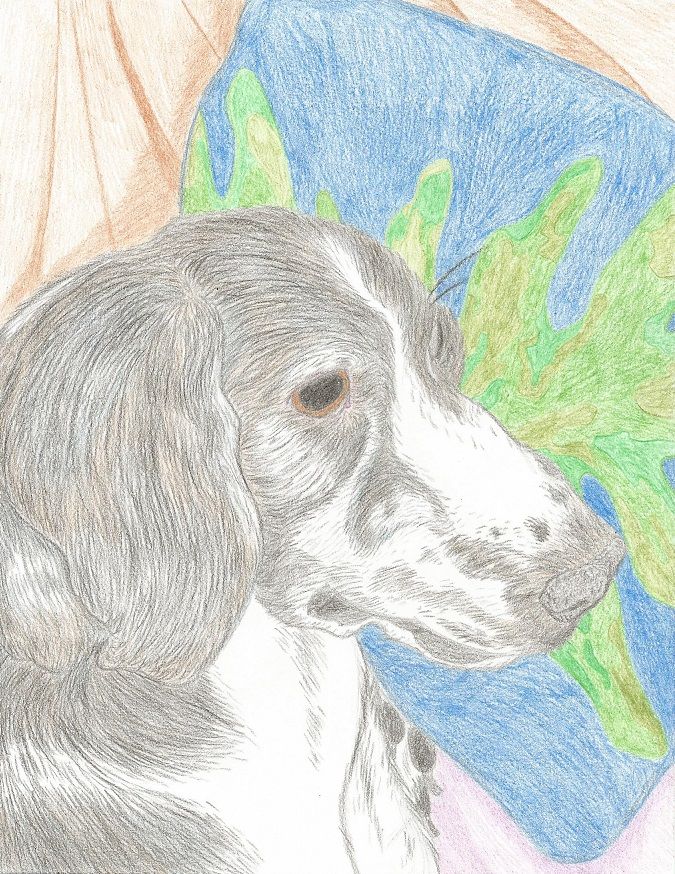

Work for Basic Skills in the Digital Arts - ISU
"Permission to Create Junk" Assignment
Daily Habits Assignment
Imitation/Reverse-Engineered Art Assignment

Emulation Assignment

Limitation Art(100 Artists) Assignment

Fan Art Assignment